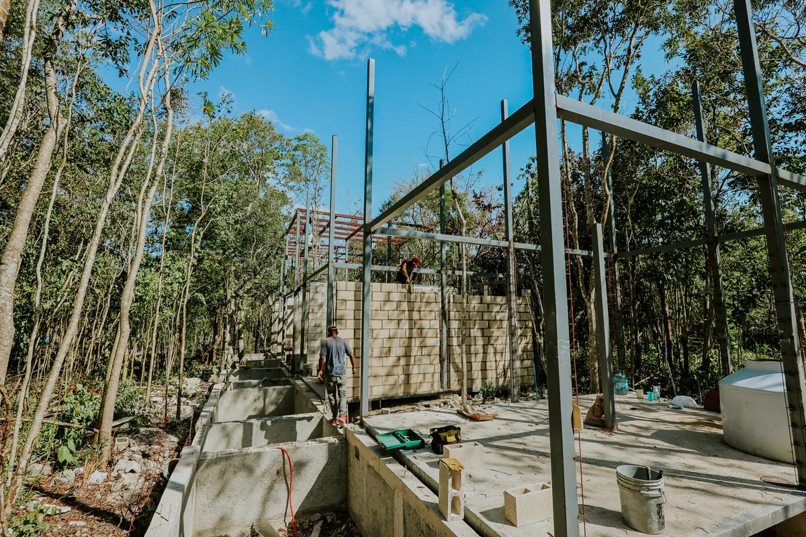
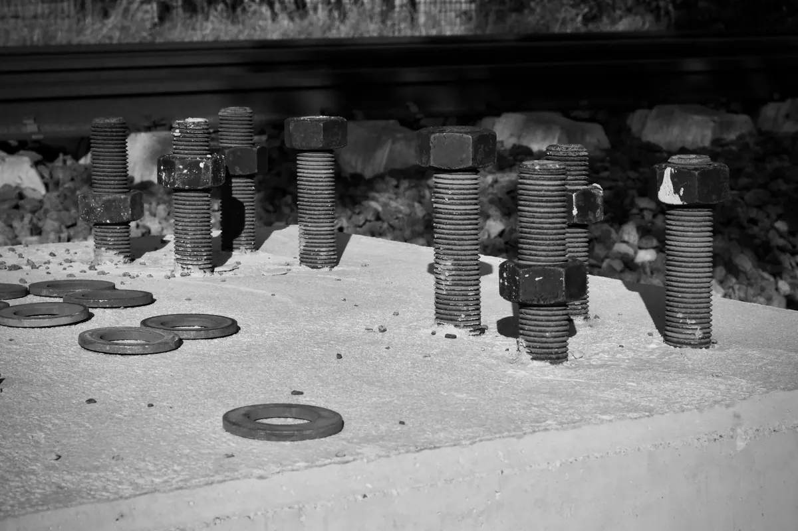
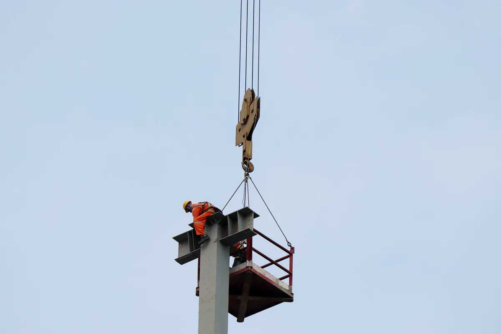
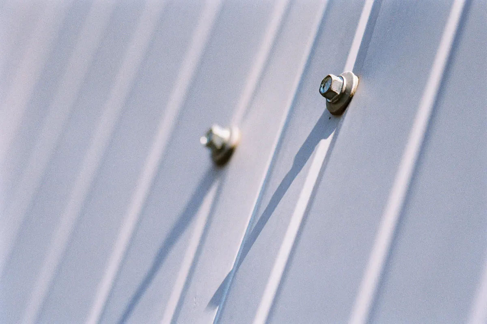

Comprou a estrutura metálica? Nós montamos
A Axial Engenharia monta estrutura metálica pré-fabricada — pórticos, galpões, coberturas, mezaninos e kits de galpão — em Vitória, Vila Velha, Serra, Cariacica e região. A estrutura vem do fabricante que você escolheu; nós especificamos o que ele precisa entregar, conferimos as peças na chegada e montamos, com engenheiro responsável e ART.
Esta página é para quem já comprou ou encomendou a estrutura. Se você ainda está no começo, veja empresa de montagem de estruturas metálicas, o projeto estrutural e o fornecimento de aço estrutural.

Você tem, nós fazemos
Cada cliente chega num ponto diferente. O escopo da montagem parte do que você já tem em mãos:
| Você tem | Nós fazemos |
|---|---|
| Estrutura fabricada + projeto + desenho de montagem | Conferência das peças na chegada, verificação da base, montagem, as-built e ART de montagem |
| Estrutura fabricada, sem projeto ou sem desenho de montagem | Levantamento das peças e verificação estrutural antes de montar; se faltar, elaboramos o projeto com ART |
| Kit de galpão comprado pronto | Conferimos se o kit atende o vento do local (NBR 6123) e a base prevista, conferimos as peças e montamos |
| Só o projeto, estrutura ainda não encomendada | Lista do que exigir do fabricante, fornecimento do material complementar e montagem quando as peças chegarem |
| Estrutura fabricada, sem cobertura nem fechamento | Fornecemos e instalamos terças, tirantes, telhas, parafusos e acessórios |
Por que contratar a Axial para montar sua estrutura
Engenharia própria e ART
Engenheiro responsável técnico acompanha a montagem, com ART registrada no CREA-ES em todo serviço.
Conferência antes de içar
Peça errada é apontada no chão, com registro, e não descoberta lá no alto.
Projeto, material e montagem
Se faltar projeto, terça, telha ou parafuso, resolvemos com a mesma equipe — ou fazemos só a montagem.
Leitura por norma
Verificação pela ABNT NBR 8800, NBR 14762, NBR 6120 e NBR 6123, com o vento do litoral considerado.
Segurança de campo
Equipe em NR-18 e NR-35, com plano de içamento para as peças pesadas e trabalho em altura controlado.
Entrega documentada
Registro de recebimento, não conformidades, registros de montagem, as-built e ART.
O que pedir ao fabricante antes de a peça sair
Boa parte dos problemas de montagem nasce no pedido de compra. Antes de fechar com o fabricante, garanta que o contrato inclua:
- Desenho de montagem (diagrama com a posição de cada peça, eixos, cotas e marcas) e desenhos de ligação.
- Lista de peças com marca, quantidade e peso, e romaneio de cada carga.
- Marcação legível em cada peça, igual à do desenho de montagem.
- Parafusos, porcas e arruelas por ligação, com especificação (diâmetro, comprimento, classe) e sobra para perdas.
- Esquema de pintura ou galvanização definido, com tinta de retoque para os pontos danificados no transporte e nas soldas de campo.
- Certificados do aço e informação sobre as soldas feitas na fábrica.
- Sequência de entrega combinada com a de montagem: pilares primeiro, cobertura por último.
Se você mandar o projeto e o pedido antes de fechar, apontamos o que falta — é mais barato corrigir o contrato do que a peça.
Recebimento e conferência das peças na obra
Cada carga é conferida na descarga, contra o romaneio e o desenho de montagem, antes de qualquer peça subir:
| Item conferido | O que se verifica | Se vier errado |
|---|---|---|
| Quantidade e marcação | Peças do romaneio presentes e marca legível igual à do desenho | Falta registrada no romaneio e cobrada do fabricante antes de a carreta sair |
| Dimensões | Comprimento, altura do perfil, esquadro e posição das placas de ligação | Peça separada, medida, fotografada e comunicada ao fabricante |
| Furação | Diâmetro, quantidade e posição dos furos contra o desenho de ligação | Não se abre furo a maçarico; a correção é definida com o engenheiro |
| Empeno e amassado | Peça reta, sem mossa de transporte nem aba dobrada | Registro com foto e decisão técnica: aceitar, desempenar ou devolver |
| Pintura ou galvanização | Cobertura uniforme, sem descascado, ferrugem ou falha | Pontos marcados para retoque com a tinta do esquema, ou devolução se a falha for extensa |
| Parafusos e acessórios | Quantidade por ligação, diâmetro, comprimento e classe | Falta cobrada do fabricante; se o prazo apertar, fornecemos o material |

Base e chumbadores prontos para receber a estrutura
A fundação é executada antes, pela obra. Antes de mobilizar o guindaste, conferimos se ela casa com a estrutura que chegou — chumbador fora de posição é a causa mais comum de montagem parada.
- Locação dos eixos e distância entre bases iguais às do desenho de montagem.
- Posição dos chumbadores contra a furação da placa de base de cada pilar.
- Rosca livre acima do concreto suficiente para porca de nivelamento, placa, arruela e porca de aperto.
- Cota de topo das bases e espaço previsto para o graute sob a placa.
- Concreto liberado para carga conforme o projeto da fundação.
Divergência encontrada vai por escrito para quem executou a base, com a medida e a correção necessária.

Sequência de montagem
- Pilares: içados, assentados nos chumbadores, nivelados pelas porcas e travados provisoriamente.
- Primeiro vão travado: vigas ou tesouras e contraventamentos do vão de referência, que dá prumo e esquadro ao resto.
- Vãos seguintes: vigas, tesouras e travamentos, sempre com o conjunto estável antes de soltar o guindaste.
- Prumo e alinhamento: conferidos antes do aperto final.
- Ligações definitivas: aperto dos parafusos conforme o projeto e soldas de campo previstas.
- Terças, tirantes, telhas e fechamentos.
- Retoque de pintura nas soldas de campo e nos pontos danificados no transporte e no içamento.
Peça que chega fora de medida: quem resolve e como se registra
A correção de fabricação é do fabricante que produziu a peça. Nosso papel é achar o problema cedo, registrar e evitar improviso:
- Registro de não conformidade com marca da peça, medida encontrada, medida do desenho e fotos.
- Comunicação ao fabricante e a você, no mesmo dia, para decidir entre troca, retorno à fábrica ou ajuste em campo.
- Ajuste em campo só com aprovação do engenheiro responsável — furo novo por furadeira, chapa de ajuste ou solda de campo definida em desenho. Nada de furo a maçarico nem calço improvisado.
- A montagem segue pelo que não depende da peça, quando a sequência permite.
Solda de campo em ligação crítica pode ser verificada por ensaios não destrutivos, executados pela própria Axial.

Material complementar: terças, telhas e parafusos
Muitos pedidos ao fabricante param no pórtico. A Axial fornece o material que falta para fechar a obra e instala tudo na mesma mobilização:
- Terças e tirantes em perfil laminado ou formado a frio, conforme o projeto.
- Telhas metálicas de cobertura e fechamento lateral, com cumeeira, rufos e acessórios.
- Parafusos estruturais e de fixação de telha, porcas e arruelas.
- Perfis e chapas de aço estrutural para complementos previstos em projeto.
No litoral, telha e fixação escolhidas sem pensar em maresia viram corrosão cedo: a especificação sai do projeto.
ART e as-built: o que você recebe no fim
- ART de montagem registrada no CREA-ES — e de projeto, quando o projeto também for nosso.
- Registro de recebimento das cargas e das não conformidades encontradas.
- Registros de montagem: prumo, alinhamento, ligações e soldas de campo.
- As-built com o que foi efetivamente montado, incluindo ajustes aprovados em campo.
Esses documentos servem para o seguro, para a regularização e para a manutenção — e são o que pedem num laudo técnico futuro.
Como trabalhamos: da estrutura comprada à entrega
Contato e documentos
Você manda projeto, desenho de montagem, lista de peças e fotos pelo WhatsApp. Entregável: escopo e dúvidas apontadas.
Análise e proposta
Avaliamos peso, altura, acesso e material que falta. Entregável: proposta com escopo fechado.
Verificação da base
Conferência de eixos, chumbadores e cotas antes da mobilização. Entregável: registro da base.
Recebimento das peças
Conferência de cada carga contra romaneio e desenho. Entregável: registro de recebimento e não conformidades.
Montagem
Içamento, prumo, ligações, terças, telhas e fechamentos em NR-18 e NR-35. Entregável: registros de montagem.
Entrega
Retoque de pintura, vistoria final e documentação. Entregável: as-built e ART.
Estrutura de galpão metálico e cobertura de quadra segue o mesmo roteiro; o que muda é o equipamento de içamento.
A estrutura já está a caminho?
Mandou as informações pelo WhatsApp, retornamos com o escopo da montagem no mesmo dia útil.
O que mandar para receber o orçamento
- Projeto e desenho de montagem do fabricante — ou, se não tiver, fotos das peças e a lista do pedido.
- Peso aproximado ou romaneio da estrutura, e a altura dos pilares.
- Situação da base: pronta, em execução ou não iniciada.
- O que falta: terças, telhas, fechamentos, parafusos.
- Local da obra, acesso para carreta e guindaste e data prevista de entrega das peças.
Perguntas frequentes sobre montagem de estrutura pré-fabricada
Comprei a estrutura de outro fabricante. Vocês montam?
Sim. É exatamente esse o serviço: a estrutura vem do fabricante que você escolheu e nós conferimos as peças na chegada, verificamos a base, montamos e entregamos as-built e ART no CREA-ES.
Quanto custa montar uma estrutura metálica já fabricada?
O valor depende do peso e da quantidade de peças, da altura, do equipamento de içamento, do acesso à obra e de a cobertura, os fechamentos e o material complementar estarem incluídos. Por isso o orçamento é feito a partir do projeto, do desenho de montagem ou da lista de peças.
Qual o prazo de montagem?
O prazo é firmado na proposta, depois de analisarmos o desenho de montagem, a lista de peças e a condição da base. Na prática, ele depende muito de as peças chegarem completas e na sequência de montagem combinada com o fabricante.
A peça chegou errada. De quem é a responsabilidade?
A correção de fabricação é do fabricante. Nós registramos a não conformidade com medida e fotos, comunicamos a você e ao fabricante e, se o ajuste em campo for viável, ele só é feito com aprovação do engenheiro responsável e fica registrado no as-built.
Vocês emitem ART da montagem?
Sim. Todo serviço tem engenheiro responsável técnico e ART registrada no CREA-ES, cobrindo as etapas contratadas: montagem e, quando for o caso, projeto.
Comprei um kit de galpão sem projeto. Vocês podem montar?
Sim, mas antes verificamos se o kit atende o vento do local pela NBR 6123 e se a base prevista é compatível. Se faltar projeto ou desenho de montagem, fazemos o levantamento e o projeto com ART antes de içar a primeira peça.
Qual a garantia da montagem?
A garantia é a prevista em lei: pelo art. 618 do Código Civil, o construtor responde pela solidez e segurança da obra por 5 anos. O as-built e os registros de montagem ficam com o cliente e servem de base para a manutenção.
Montagem de estrutura pré-fabricada na Grande Vitória
Conferência e montagem de estruturas compradas de fabricante em toda a região: